ARCHIVE
PREMIÈRE EXPÉRIENCE
DOC-02
NIVEAU : CRITIQUE
GENESIS
N.02-026
TRANSCRIPTION
Statut initial : Isolement prolongé (4 mois en cuve)
I. Contexte préalable
Le sujet N.02-026 a été maintenu durant quatre mois dans une cuve, sans stimulation sensorielle significative, sans interaction sociale, et sans protocole de protection psychologique ou physique.
Objectif de cette phase : affaiblissement cognitif progressif et altération des repères temporels.
À l’issue de cette période, le sujet a été extrait et transféré vers une salle d’expérimentation isolée.
L’expérience s’inscrit dans un programme de recherche portant sur l’effacement et la reconstruction de la mémoire à long terme. Les protocoles envisagés devant ultérieurement être appliqués sur un sujet tiers à valeur personnelle, aucun échec méthodologique n’est toléré.
N.02-026 fut désigné comme sujet test initial.
II. Première Expérience : Induction hallucinatoire et reprogrammation cognitive
Objectif :
Fragiliser les fondations de la mémoire du sujet afin d’introduire des souvenirs artificiels et d’altérer la cohérence identitaire.
Matériel utilisé :
- Fauteuil métallique de contention
- Sangles de fixation (poignets, thorax, jambes)
- Seringue
- Substance psychotrope de type LSD (dose modérée, calculée)
- Générateur d’impulsions électriques contrôlées
III. Procédure
1. Immobilisation
Le sujet fut installé sur un fauteuil métallique centralisé dans une pièce close à forte résonance acoustique.
Les poignets furent fixés au dossier, les membres inférieurs immobilisés. Aucune marge de mouvement significative ne fut laissée.
Observation initiale :
- Masse musculaire faible
- Ossature saillante
- Indice de fatigue physiologique avancée
- Signes de carence post-isolement prolongé
2. Administration de substance
Injection intraveineuse d’un psychotrope hallucinogène (LSD).
Délai d’attente observé : environ 40 minutes.
Signes cliniques relevés :
- Dilatation des pupilles
- Tachycardie modérée
- Désorientation spatio-temporelle
- Fluctuation du regard
- Hypersensibilité auditive
3. Phase de suggestion
Pendant l’état de vulnérabilité perceptive, introduction verbale répétée de :
- Ordres simples
- Suggestions comportementales
- Narrations destinées à s’implanter comme souvenirs artificiels
Technique utilisée : répétition rythmée, tonalité basse, cadence régulière.
4. Stimulation électrique
Application d’impulsions électriques contrôlées durant les pics de confusion cognitive.
But : associer douleur, peur et désorientation aux suggestions implantées.
Effets observés :
- Contractions musculaires violentes
- Cris involontaires
- Épisodes de dissociation manifeste
Aucune brûlure irréversible constatée. Paramètres maintenus en dessous du seuil létal.
IV. Répétition
Le protocole fut reconduit sur une période continue.
Le sujet ne fut pas replacé en cuve, mais maintenu en isolement sensoriel partiel dans la salle d’expérimentation.
Durée cumulée : 5 mois.
Rythme :
Sessions régulières espacées de phases de récupération minimale.
V. Résultats
Malgré la fragilisation psychologique observée, aucune altération durable et contrôlée de la mémoire ne fut confirmée.
Constats :
- Les souvenirs fondamentaux résistent.
- Les constructions artificielles s’effondrent après stabilisation cognitive.
- L’identité du sujet demeure structurellement intacte.
Conclusion : Échec du protocole.
VI. Phase intermédiaire
Avant mise en place d’une seconde expérience, une période de stabilisation fut accordée au sujet. (2 mois)
Mesures appliquées :
- Transfert dans une salle aménagée (environnement contrôlé mais moins austère)
- Apport nutritionnel renforcé
- Surveillance médicale
- Élimination progressive des substances résiduelles
- Programme de remise en condition physique légère
Objectif : restaurer suffisamment les capacités physiologiques du sujet afin de garantir sa viabilité pour la phase suivante.

PAGE 01